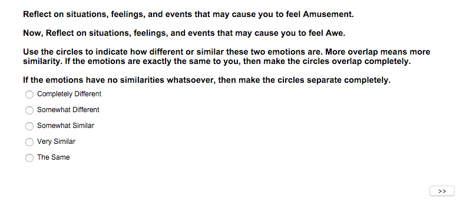

INTERACTIVE SURVEY TOOL
CUSTOM INTERFACE ADDON FOR QUALTRICS
At the Yale Center for Emotional Intelligence, we wanted to investigate the way people thought about various emotions in relation to one another. We found that existing tools on our online survey platform (Qualtrics) did not provide a effective medium for asking this question, so I designed and implemented my own solution: a draggable Venn Diagram. Throughout this process, I reviewed survey design literature, learned JavaScript, and coded an interactive Venn Diagram that interfaces seamlessly with Qualtrics’ existing system. The final product was delivered to thousands of online participants, and has yielded data and visualizations that are being used for research publication.
PART ONE: IDEATION AND DESIGN
We wanted to better understand how emotions related to each other at the most basic, instinctual level. The first thought that came into mind was a 3D space, with emotion words floating like planets, each word gravitating towards some, and away from others. A force directed layout seemed like the best way to visualize the complex, multidimensional differences between emotions. This meant that we needed data points between every single possible emotion pair, which meant a plain, unobtrusive way of asking: how similar are emotions A and B? The first option we considered on our online survey platform (Qualtrics) was the standard Likert scale, to which participants could input the degree to which they felt two emotions were similar. However, when tested, the Likert scale did not seem to be the intuitive way in which one expresses opinion on similarity/difference. Clicking individual radio buttons categorized the emotions in a rigid, artificial way, and did not reflect the nuanced nature of the emotional world.
MTURK IS NOT MOBILE FRIENDLY
Next, we prototyped our survey using Qualtrics’ draggable sliders, which seemed more capable in capturing the fine differences between emotions. However, the extravagant graphics of the Qualtrics designs were not suited to this type of question. Reviewing from psychological literature regarding the priming effects of colors, graphics, and visuals, we knew that we needed a plainer, simpler measure.
The next vision for our design was an interactive Venn diagram, that engaged both participants’ numerical and visual intuition. Our first Venn Diagram presented Emotion A as a red circle, and Emotion B as blue circle, with the overlap as gray. But upon evaluation and testing, we noticed that color activated associations with emotions, which we suspected could influence participant results. In our final design, we abandoned color for a neutral, grayscale design:

PART TWO: IMPLEMENTATION AND CODING
I examined the existing Qualtrics implementation of the draggable graphic slider, determined the process by which each question was generated and displayed, and inserted our Venn Diagrams in place of the standard graphics. This was done by investigating the HTML, JS, and EventListeners. The least invasive point of entry was to change the URL of images associated with each slider position. I coded a custom script that changed each image src to a Venn Diagram image, and added a customizable emotion word on each end of the diagram. Images were hosted on an external website, as Qualtrics did not enable public access to images to its servers by users. The survey was successfully tested on most major browsers, operating systems, and mobile devices:
PART THREE: REVERSE ENGINEERING AND DELIVERY TO PARTICIPANTS
Now that the Javascript code was functional, we needed to create a Qualtrics survey that presented Venn Diagrams comparing every single combination of emotions. Manual implementation of this process would have been nearly impossible and prone to human error, as the Qualtrics survey platform allows users to edit individual questions one at a time, but doesn’t allow for batch customization of all the variables we needed. Our survey consisted of:
- 378 Venn Diagrams, comparing every single possible pair of emotions (without regard to order)
- Customized instructions for each Venn Diagram
- Unique Question IDs and informative export tags for each question, for data analysis
- Page breaks between each Venn Diagram